Overview of OMERO
OMERO is a software platform for visualizing, managing, and annotating scientific image data. OMERO lets you import and archive your images, annotate and tag them, record your experimental protocols, and export images in a number of formats. It also allows you to collaborate with colleagues by creating user groups with different permission levels. Finally, it provides a convenient interface for programmatic access to your image data.
OMERO.web is a web-based interface that provides most of the core OMERO functions described above. You can explore the public JAX instance of OMERO.web at images.jax.org, where we have made some data publicly available. Note that this website is just a viewer for our public data and will not allow you to log in.
OMERO instances at JAX are hosted by Research IT for JAX research labs.
Where does OMERO fit into the JAX image data ecosystem?
Importing images into OMERO is as simple as requesting access and uploading images to our automated import folders.
Both the microscopy delivery folders and the OMERO import folders (jax/omero_drop/dropbox) are accessible via Globus for quick transfers 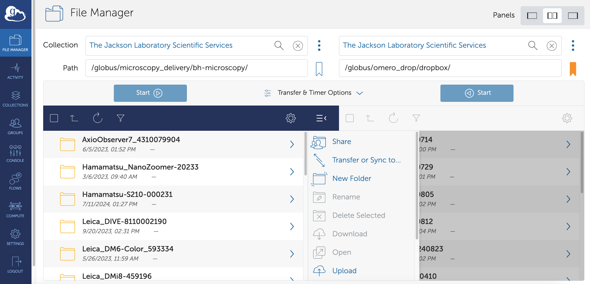
Images in OMERO can be directly accessed via other analysis platforms such as QuPATH, ImageJ/Fiji, and Python. In Day 2, we will walk through an example workflow using Fiji.
Other resources
Day 1: Viewing images in OMERO.web
Browsing images
- Login to the webclient at http://ctomeroweb01.jax.org/ with the Username and Password provided.
- Browse hierarchy of Project “Training Data” and Dataset “siRNAi-HeLa” to find images. Several control images in the Dataset have “scram” in their name. Other images are named with siRNAi targets “IN” for INCENP and other names for minor INCENP variants.
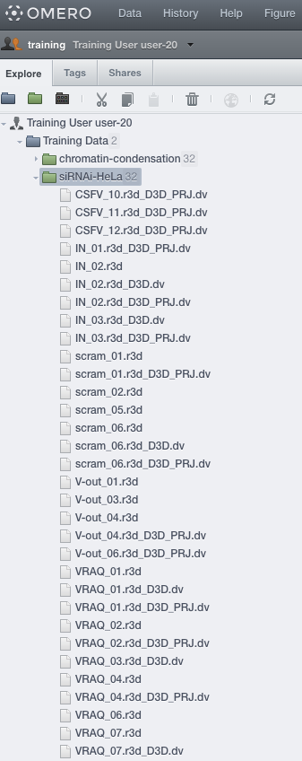
- Zoom the thumbnails using the slider below thumbnails.
- Use Shift+click or Ctrl+click to select multiple thumbnails that appear to be in Metaphase (one or two single lines appear in each cell as opposed to round blobs):
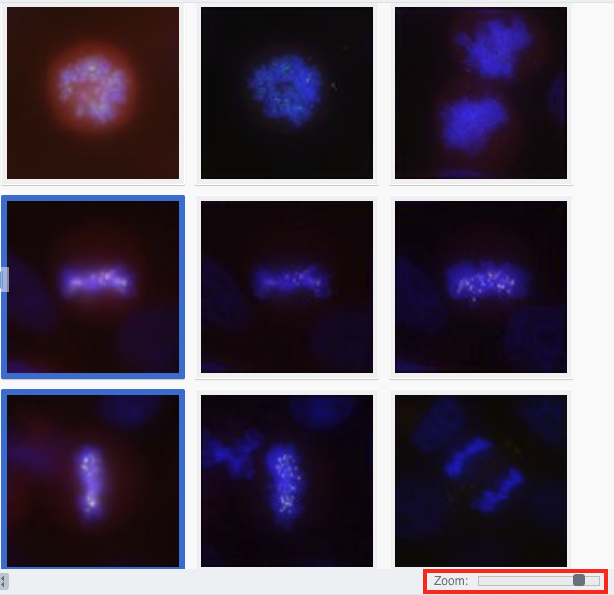
Tag annotations
- In the right-hand panel, expand the Tags pane and click on the button to add tags to all the selected images.
- In the “Tags Selection” dialog, you can select available Tags from the list on the left (filtering if needed). Find the “Metaphase” Tag and click on the button to move it into the right-hand list then click “Save”.
- Add another Tag to the selected images: This time, create a new tag that is likely unique to you (see bottom left of Tag dialog) e.g. could be the name of your favourite gene or simply “Bob likes this”.
- Click the newly-added Metaphase Tag: in the right-hand panel. This will browse by Tags to show all Images with this Tag, be those your images or images of your colleagues.
- Notice at the top-left of the page that we are now browsing data belonging to Trainer-1, the owner of the Metaphase tag.
- You can also search for the tag using the search bar on the top right of the screen. By default, it will look for images that belong to you, but you can change the scope of that on the left-hand side of the search screen:
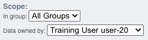
Filtering images
- Click Browse for one of the images in the table to return to the Dataset. At this point, make sure you are looking at your own images; check the top left corner of the screen. If you are not, click that bar and navigate back to your user:
- Above the thumbnails, click Add Filter > Name and enter “scram” to filter for all control images in this RNAi experiment.
Preview viewer
- Select an image, click the Preview tab of the right panel and Turn off channels 1 and 4 by clicking on the blue and red buttons.
- Adjust the intensity levels of the green channel which is INCENP, and channel 3 which is Aurora-B. You can use the Histogram feature to help you with the adjustments.
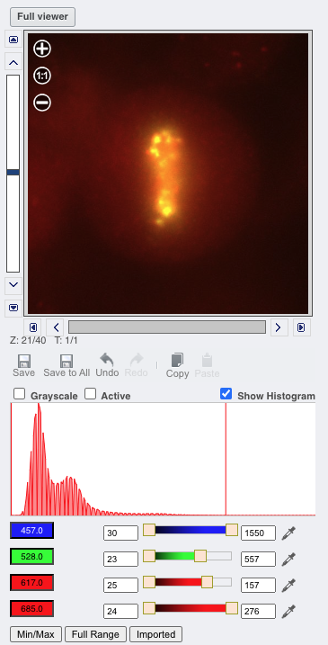
Bulk saving rendering settings
- We want to compare levels of these targets across all images in the Dataset. Click Save to All.
- Thumbnails will be updated with new rendering settings, allowing comparison across the Dataset. Thumbnails can be zoomed using the slider below.
- In the left panel hierarchy, right-click on the siRNAi-HeLa Dataset and choose Rendering Settings… > Set Imported and Save to return to original settings.
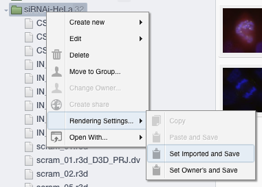
Ratings
- Filter images by Name “VRAQ D3D” and select the first image “VRAQ_01.r3d_D3D.dv”.
- In the General tab of the right-hand panel, expand the Ratings panel and click the stars to give this image a rating of 5.
- Filter images by Name “IN 02 D3D”, select the first image “IN_02.r3d_D3D.dv” and add a rating of 5.
Time for a break!
OMERO.iviewer
- Now, clear the filtering by Name and instead, filter images by Rating of 5 to show only the 2 images we have just rated.
- Select both images, right click on the selected images in the tree and choose Open with… > OMERO.iviewer. You can also find the Open with option at the top of the right panel.
- Click the Crosshairs icon 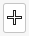 at the top-right of the viewer to enable the pixel intensity display for the mouse pointer. Then mouse over the Image to see the pixel intensities for the channels turned on.
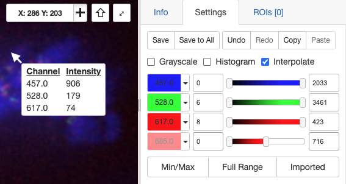
- Our goal with this image is to measure the distance between centromeres, stained with ACA in the 4th Channel. Turn on ONLY the 4th channel and open the ROIs tab to the right.
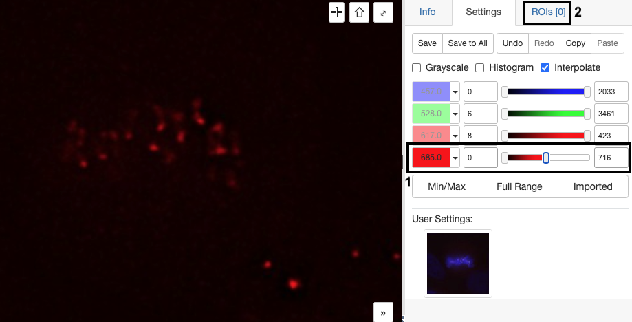
Drawing ROIs in OMERO.iviewer
- Select the Line tool and draw a line between the centers of centromere pairs. In the ROIs table, click the 3 dots in the column header and choose to Show Area/Length. Click Save to Save ROIs.
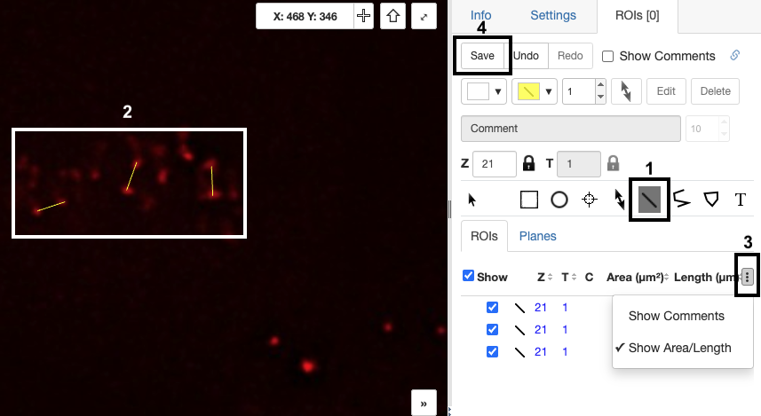
- You can also use Z-Projection ( at the bottom left) which might help find outlying centromeres. Note that Z-Projection may not work for images with very large stacks!
- Once done with drawing ROIs, click Save again.
- Click on the Select tool:
- To export statistics, we first need to select all the ROIs using ctrl+drag (cmd+drag on a Mac) to select a region in the viewer (if ROIs are spread across multiple Z-sections, we can show them all at once using Z-projection). The selected ROIs will be highlighted blue on the image.
Export ROI statistics
- To export lengths and intensities of ONLY the 3rd channel (Aurora-B) turn on only this channel on the Settings tab of the right-hand panel.
- Export the Intensities, areas and line lengths into Excel. Select in the top-left corner ROIs > Export as Table. This will export the values from the selected ROIs.
- Open the downloaded table in Excel or similar tool to see the lengths and intensity measurements for the ROIs.
OMERO.figure
- Back in the webclient window, select both 5-rated (VRAQ_01.r3d_D3D.dv and IN_02.r3d_D3D.dv), right-click them (on the left-side file list) and select Open with… -> OMERO.figure.
- Change the paper orientation to horizontal in File > Paper Setup.
Making a grid in OMERO.figure
- Drag the images to place one above the other, select both and click the Grid layout button . Resize to make the figure smaller. Copy both images and paste twice to make a grid with 2 rows with 3 columns.
- Select both panels from each column in turn and toggle on a different channel for each column. Select all panels and try different Z indices and Z-projections.
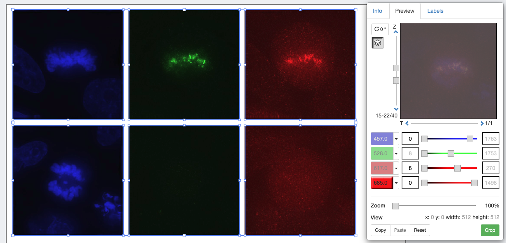
Add labels to figure
- Select the 2 panels in the left column, click on the Labels tab in the right panel and under Add Labels choose [image-name] from the drop-down menu. Click on the position chooser and choose “Left Vertical” from the options. Click Add.
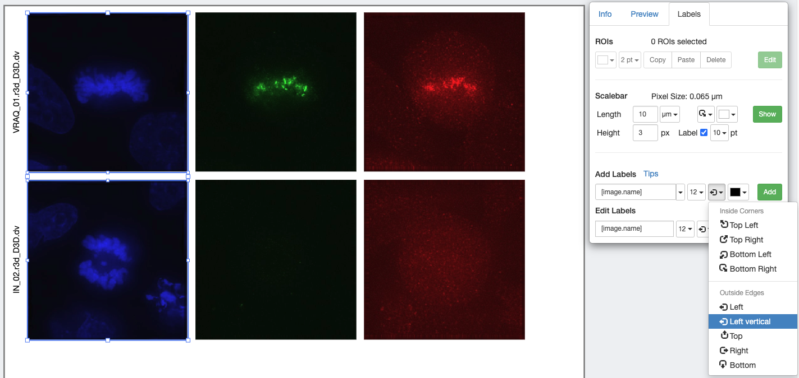
Exporting figures
- Click Export PDF and then when complete, click the Download button. Open the downloaded pdf in any suitable program and find the second page of the pdf. Click on the link to the image and see that you are navigated back to OMERO in your browser and the appropriate image, which was used in the Figure, is highlighted.
Viewing other users’ figures
- Save the figure and see that the URL updates to a new URL for this figure which can be shared with colleagues. File > Open can be used to open your own figures or those of colleagues.
- Click File > Open, then click on the Owner button to select a figure of other users (your colleagues). Select and open other users’ figures and study them.
- With another user’s figure open, select File > Save a Copy to save your own copy of your colleague’s figure. Note that you cannot directly save changes on their figure.
Homework for Day 2: Make sure you can run Fiji
- Start the Fiji app and use the OMERO plugin to browse data in OMERO i.e. Plugins > OMERO > Connect To OMERO
- In the OMERO login dialog, click the wrench icon and then add the server address (ctomerodev.jax.org – NOTE THIS IS A DIFFERENT ADDRESS!) in the dialog. Click Apply. Now, log in with the provided details (the same you have been using for the webpage).
- Find and open any image (double-click the thumbnail) to make sure things work!